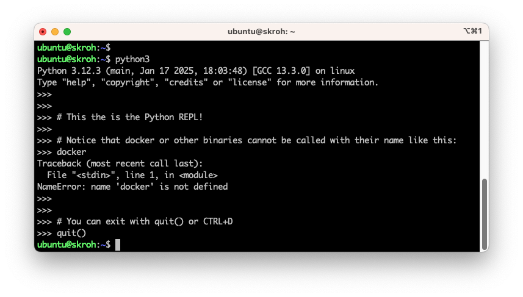

Python 101
Perusteet
Missä ajetaan?
Docker
Aivan kuten aiemmissa osioissa käsitellyt kielet, myös Python-kieliset skriptit voidaan ajaa Docker-kontissa. Tämä on, aivan kuten ennenkin, kannattavaa jos teet jotakin riskialtista, kuten tuhoat tiedostoja. Kontti mahdollistaa ns. "clean slate" -ympäristön, jossa ei ole mitään ylimääräistä.
Lokaalisti
Python on valmiiksi asennettuna Ubuntussa ja monissa muissa Linux-jakeluissa. Windowsissa Pythonia ei ole valmiiksi asennettuna, mutta sen voi ladata ja asentaa Pythonin kotisivuilta. Asennuksen jälkeen Python on käytettävissä komentoriviltä, kunhan muistat aktivoida Add Python to PATH -valinnan asennuksen aikana.
Paketinhallinta... not today
Kun luot Python-ohjelmaa tai -kirjastoa, käytät todennäköisesti virtuaaliympäristöjä tai jopa paketinhallintaaohjelmia, kuten Python Poetry tai uv.
Kun kirjoitat skriptiä, on jossain määrin oletettavaa, että käytät sitä Python-versiota, mikä sattuu olemaan asennettuna binäärissä /usr/bin/python3.
Tässä luvussa emme luo ohjelmia vaan irrallisia skriptejä. Pyrimme pitämään asiat mahdollisimman yksinkertaisina, joten emme käytä kohdekoneessa virtuaaliympäristöjä, paketinhallintaa, emmekä edes asenna pip-paketteja. Käytämme sitä Python-versiota, mikä sattuu olemaan asennettuna. Lokaalissa koneessa saatamme asentaa paketteja, jotta meidän ympäristömme vastaa sitä, mikä Debianissa on vakiona.
Python on monilta osin cross-platform, joten skriptit toimivat samalla tavalla riippumatta siitä, ajatko niitä Windowsissa, Linuxissa vai macOS:ssä. Esimerkiksi hakemistopolut käyttäytyvät pathlib-kirjaston avulla samalla tavalla riippumatta käyttöjärjestelmästä: Path on alustasta riippuen joko WindowsPath tai PosixPath.
Warning
Eroja tosin silti löytyy! Esimerkiksi tiedostoja kirjoittaessa kannattaa olla skarppina, että määrität eksplitiittisesti tiedoston enkoodauksen, sillä Windowsissa oletusenkoodaus on win-1252, kun taas Linuxissa ja macOS:ssä se on utf-8.
Myös Linux-jakelut voivat yllättää muutoksillaan. Debianissa (ja myös Ubuntussa) on käytössä dist-packages-hakemisto, joka ei ole standardi Pythonin osalta. Tämä voi aiheuttaa esimerkiksi sen, että Ubuntu-käyttäjät luulevat requests-kirjaston olevan osa Pythonin Standard Libraryä.
Mikä Python on?
Vapaasti suomennettu What is Python? Executive Summary on seuraava:
Quote
Python on tulkattava, olio-ohjelmointiin perustuva korkean tason ohjelmointikieli. Sen monipuoliset tietorakenteet, dynaaminen tyypitys ja sidonta tekevät siitä erinomaisen nopeaan sovelluskehitykseen sekä skriptauskieleksi eri komponenttien yhdistämiseen. Selkeä ja helposti opittava syntaksi parantaa luettavuutta ja vähentää ylläpitokustannuksia. Python tukee moduuleja ja paketteja, mikä edistää koodin uudelleenkäyttöä. Tulkki ja laaja vakiokirjasto ovat ilmaiseksi saatavilla kaikille merkittäville alustoille. 1
Pythonin sijasta voisimme yhtä hyvin opiskella Perliä. Kumpikin kieli ponnistaa samankaltaisesta historiasta eli Unix-skriptauksesta. Aivan kuten python3, myös perl on mitä todennäköisimmin valmiiksi asennettuna jakelussasi. Perl on kenties kotikentällä skriptauksessaan vahvemmassa asemassa. Pythonin oma dokumentaatio tiivistää sen näin: "As a consequence, Python comes close to Perl but rarely beats it in its original application domain; however Python has an applicability well beyond Perl's niche 2" Me käytämme Pythonia monista syistä, joita yksi on se, että kurssilla käsitelty Ansible on kirjoitettu Pythonilla. Toinen on se, että opiskelijat ovat usein jo käyttäneet Pythonia jossain muussa yhteydessä. Jos halut lukea Pythonin oman näkemyksen kielen vahvuuksista, lue esimerkiksi Python Docs: Whetting Your Appetite
Alla on piirakkakuvaajaan laskettuna Python, Perl ja Shell-skriptien sekä Linux-binäärien määrä /usr/bin-hakemistossa.
pie showData
title File types in bin
"Python" : 46
"Perl" : 50
"Shell" : 132
"Binaries" : 631Kuinka tiedostot laskettiin?
Komento on ajettu Multipassilla luodussa virtuaalikoneessa, jossa on arm64 Ubuntu 24.04. Komennon find syntaksi on hieman vaikea tulkita, mutta se suorittaa komennon file <file_1> <file_2> <file_...>. Kyseinen komento tulostaa rivin per tiedosto, joka sisältää päätellyt tiedostotyypin. Nämä rivit putkitetaan grep-komennon filtteröitäväksi, ja lopulta lasketaan filtterin läpäisseet rivit.
$ # Count Python scripts in /bin
$ find /usr/bin -type f -exec file {} \+ | cut -d: -f2 | grep -i "python" | wc -l
46
$ # Count Perl
$ find /usr/bin -type f -exec file {} \+ | cut -d: -f2 | grep -i "perl" | wc -l
50
$ # Count Shell scripts
$ find /usr/bin -type f -exec file {} \+ | cut -d: -f2 | grep -i "shell" | wc -l
132
$ # Count binaries
$ find /usr/bin -type f -exec file {} \+ | grep "ELF" | wc -l
631
Erot shelleihin
Huomaa, että Python ei käyttäydy shellinä samalla tavalla kuin Bash tai PowerShell. Pythonissa toki on olemassa niin sanottu Python Shell, mutta se ei ole shell sanan samassa merkityksessä. Pythonin Shell on "REPL" (Read-Eval-Print Loop), joka on interaktiivinen ohjelmointiympäristö. Tämä tarkoittaa, että voit kirjoittaa Python-koodia ja nähdä tuloksen välittömästi. Mikä sen sitten erottaa Bashista tai PowerShellista? Et voi suorittaa järjestelmäkomentoja suoraan Python Shellissä. Eli siis ls ei tulosta hakemiston sisältöä, cd ei navigoi hakemistossa, docker ei kutsu Docker CLI:tä ja niin edelleen.
Selvyyden vuoksi täytyy painottaa, että vaikka emme voi kutsua PATH:ssa olevia binäärejä suoraan Python Shellistä, voimme kutsua niitä subprocess-moduulin avulla. Näin myös tulemme kurssin aikana tekemään.

Kuva 1: Python Shell on interaktiivinen ohjelmointiympäristö, jossa voit kirjoittaa Python-koodia ja nähdä tuloksen välittömästi. Huomaa, että se käynnistetään tyypillisesti jonkin shellin child-prosessina: kuvan tapauksessa Bashin. Interaktiivista shelliä voi käyttää leikkikenttänä, mutta tyypillisesti Python ajetaan skriptinä.
Ensimmäinen kontti
Aivan kuten edellisissä osioissa, myös Python-skriptit voidaan ajaa Docker-kontissa, mutta image pitää valita siten, että Python 3 on asennettuna.
Komento suorittaa imagen default Cmd:n, joka on python3. Toisin sanoen käynnistät Python Shellin. Vaihtoehtoisesti voit antaa sille parametriksi polun skriptiin. Tähän tutustumme kurssin aikana.
Skripti
Sisältö
Huomaa, että shebang ei ole sinänsä osa Pythonia, eikä tyypillinen Python-ohjelma sisällä shebangiä. Alustamme on Unix-like, ja teemme skriptiohjelmointia, joten voimme kuitenkin hyödyntää sitä - ja näin tekevät /usr/bin-hakemiston Python-skriptitkin.
🆕 Inline Script Metadata
Tulevaisuus
Tämä on tuore feature ja siksi otsikossa on 🆕-emoji. Emme käytä ominaisuutta kurssilla, mutta koska se liittyy vahvasti skriptaukseen ja lienee tulevaisuudessa yleinen käytäntö, on hyvä olla tietoinen siitä.
PEP 723 (Python Enhancement Proposal) toi mukanaan Pythoniin uudistuksen Inline Script Metadata. Kuinka tätä sitten hyödynnetään? Alla on esimerkki metadatan muotoilusta skriptin alkuun. Skriptiä ei voi ajaa suoraan Python 3.12:lla, vaan avuksi tarvitsee muita työkaluja, kuten uv tai hatch.
# /// script
# requires-python = ">=3.12"
# dependencies = [
# "requests",
# "pydantic",
# ]
# ///
import requests
from pydantic import BaseModel
class Post(BaseModel):
userId: int
id: int
title: str
body: str
# Fetch a dummy Post from REST API using Requests
response = requests.get("https://jsonplaceholder.typicode.com/posts/1")
post = Post.model_validate_json(response.content)
print(post.title)
Jos uv on asennettuna, voit ajaa skriptin seuraavasti:
$ uv run inline_metadata_example.py
Installed 9 packages in 21ms
[INFO] The title: sunt aut facere repellat provident occaecati excepturi optio reprehenderit
Huomaa, että inline-metadatassa listatut riippuvuudet (ja niiden riippuvuudet) asennettiin automaattisesti väliaikaiseen ympäristöön.
Entä kontissa?
Voit toki kokeilla samaa ominaisuutta myös kontissa. Esimerkiksi näin:
Ajaminen
Python skriptin voi ajaa joko argumenttina python3-ohjelmalle tai suoraan skriptinä, jos shebang on määritelty, ja tiedosto on ajettava (executable, x file mode).
Bash Python-ajurina
On mahdollista hyödyntää Python-kieltä Bash-skriptissä. Tämä on hyödyllistä, kun haluat suorittaa jonkin operaation, mikä on merkittävän vaikea toteuttaa Bashilla. Jopa kohtalaisen yksinkertaisissa tapauksissa Python voi edistää syntaksin selkeyttä ja ymmärrettävyyttä - ja tämä on tärkeää, jos skriptiäsi joku muu joutuu lukemaan.
Kuvitellaan esimerkki, että sinun tulee selvittää, kuinka monta päivää on tietyssä kuukaudessa. Mieti hetki, kuinka tämä voisi onnistua Bashissä. Tämän jälkeen avaa alta vihjelaatikko, jossa on ainakin yksi ratkaisu tähän.
Vihje: Kuukauden päivät Bashillä
Voit toteuttaa tämän Bashilla käyttämällä case-lauseketta. Helmikuu vaatisi kuitenkin karkausvuosien osalta poikkeuksen. Tämä ei ole maailman vaikein ohjelma, ja olet kenties jo aiemmassa harjoituksessa toteuttanut is_leap_year -funktion, jota voisi hyödyntää tässä.
Saman voisi toteuttaa Pythonissa rautakoodattuna näin:
Voimme upottaa seuraavan Python-rimpsun Bashiin näin:
#!/bin/bash -eu
# Usage: days_in_month.sh [month] [year]
month=$1
year=${2:-$(date +%Y)}
n_days=$(python3 -c "
import calendar
print(calendar.monthrange($year, $month)[1])
"
)
echo "Number of days in $month/$year: $n_days"
Warning
Miksi joku siis suosisi natiivia Bash-toteutusta? Yksi syy on, että Linuxissa on aina jokin POSIX-yhteensopiva shell saatavilla, toisin kuin Python. Tyypillisistä jakeluista python3 löytyy, mutta konteissa ajetaan usein kovin karsittua imagea. Jos käytät Pythonia skripteissä, sinun pitää valita oikea image. Lisäksi vuosikymmeniä vanha POSIX-yhteensopivuus on melko vakaa verrattuna Pythonin versioyhteensopivuuteen.
Käytännössä tässä taistelevat siis portability + stability vs. readability + maintainability.
Tähän ei ole absoluuttisesti oikeaa ja väärää vastausta.
Tehtävät
Tehtävä: Python informaatiohaku
Muodosta itsellesi katalogi tarpeellisista lähteistä. Python kehittyy aktiivisesti, joten suosi uusia lähteitä. Alla pari suositusta, mistä aloittaa etsintä:
- The Python Standard Library. Pythonin oman dokumentaation Standard Library -osio on korvaamattoman hyvä. Pythonin mukana tulevien moduulien dokumentaatio on täällä. Kurssilla käytetään skriptaukseen liittyviä moduuleja, joista tärkeimpinä
os,sys,subprocess,argparsejalogging. Mitä mahtaa tehdä esim.calendar? Entägetpass? - DevHints.io: Python. Cheat sheet, joka sisältää kielen perusasiat yhdessä paketissa. Tämän ja ylemmän lähteet avulla saat jo yllättävän paljon aikaiseksi.
- Python strftime cheatsheet. Jos/kun päädyt pelaamaan päivämäärien formatoinnin kanssa, tämä cheat sheet on nopea apu.
- Python for DevOps: Learn Ruthlessly Effective Automation. Kirja löytyy korkeakoulun Finna-kirjastosta digitaalisena kopiona. Voit lukea sitä selaimessa.
Skriptaus on niin laaja käsite, että hakusanoilla "python scripting" ei yleensä löydä mitään hyödyllistä. Tee siis ensin tarkempi suunnitelma siitä, mitä aiot tehdä, ja muodosta tämän avulla hakusanasi. Kielimallit voivat auttaa hahmottamaan, millä kirjastoilla haluamasi ratkaisu hoituu.
Jos olet valmis sijoittamaan opiskeluusi rahaa, myös seuraavat lähteet voivat olla varteenotettavia:
- 💰 Humble Bundle. Sivustolla on ajoittain tarjolla kirjoja, jotka käsittelevät Bash-skriptauksen perusteita. Tarjonta vaihtelee jatkuvasti, joten on tuurista kiinni, löytyykö sieltä nyt mitään hyödyllistä. Kirjapaketit maksavat yleensä halvimmillaan noin 1-20 euroa.
- 💰 O'Reilly. Kirjastoon kuuluu useiden eri julkaisijoiden kirjoja: O'Reilly, No Starch Press, Manning Publications, Packt, Apress ja monet muut. Luettavissa kuukausimaksulla.
- 💰 Real Python: Subprocess. Real Python on maksullinen sivu, mutta maltillisen määrän artikkeleita saa lukea ilmaiseksi. Kun tiedät, mitä haluat, voit etsiä tietoa tarkemmin täältä. Tässä linkitetty artikkeli käsittelee
subprocess-moduulia, joka on tärkeä osa Python-skriptauksen työkalupakkia.